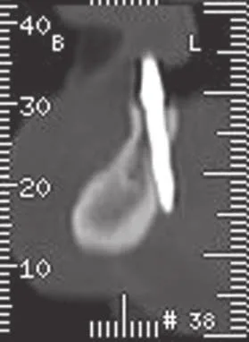
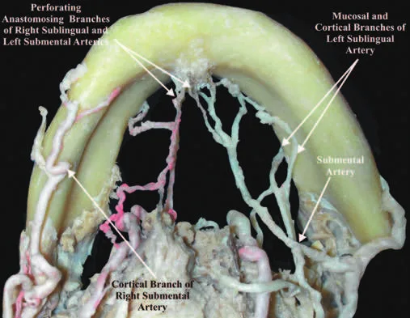

نسخه استخراجشده؛ ترجمه یا تأیید علمی انجام نشده است. وضعیت: captured
در بیشتر نواحی دهان، خونریزی یک مشکل است. در کف دهان، خونریزی میتواند یک اورژانس تنفسی شود. تفاوت را آناتومی میسازد.
دو شریان اصلی و تقسیم کارشان:
• شریان سابلینگوال (شاخهی شریان لینگوال) — غدهی بزاقی سابلینگوال، عضلهی مایلوهایوئید و عضلات اطراف، و مخاط و لثهی مندیبل را خونرسانی میکند.
• شریان سابمنتال — بزرگترین شاخهی شریان فاسیال و مهمترین شاخهی آن برای ایمپلنتولوژی است. انتهایش با شاخهی سابلینگوالِ شریان لینگوال و شاخهی مایلوهایوئیدِ شریان آلوئولار تحتانی آناستوموز میدهد.
و سهمشان از خونرسانی کف دهان: مطالعات نشان دادهاند کف دهان و لثهی لینگوال حدود ۵۳ درصد از شریان سابمنتال و باقی از شریان سابلینگوال تغذیه میشود.
حالا مهمترین نکتهی موقعیتی این درس: شریانهای سابلینگوال معمولاً بالای خط مایلوهایوئید و شریانهای سابمنتال زیر یا داخل عضله مسیر میگیرند. در بیماران دنداندار، خطر خونریزی از عروق بالای خط مایلوهایوئید بالاست.
و در بیماران بیدندان ماجرا عوض میشود: خط مایلوهایوئید به کرست آلوئولار نزدیک میشود، و همین خطر خونریزی و آسیب شریانی در فضای سابمندیبولار را بالا میبرد.
خونریزی تهدیدکنندهی حیات وقتی گزارش شده که مته پلیت لینگوال ناحیهی سابلینگوال مندیبل را سوراخ کرده و به شریان سابلینگوال یا سابمنتال آسیب زده است — بهویژه در ناحیهی کانین. اگر سوراخشدگی کورتکس لینگوال با خونریزی شریانی همراه باشد، شناسایی منشأ و درمان تهاجمی حیاتی است.
و یک هشدار عملی: در ناحیهی خلفی مندیبل هم آندرکات لینگوال دردسرساز است؛ آنجا سوراخشدن پلیت لینگوال خیلی راحت رخ میدهد و پیدا کردن منشأ خونریزی میتواند دشوار باشد.
عدد کلیدی آندرکات: مطالعات نشان دادهاند آندرکات لینگوال در حدود ۶۶ درصد جمعیت وجود دارد، با میانگین عمق ۲٫۴ میلیمتر. یعنی دو نفر از هر سه بیمار. به همین دلیل معاینهی بالینی برای تشخیص آندرکات استخوانی همیشه لازم است، و اگر طراحی نشان دهد ایمپلنت وارد آندرکات سابلینگوال میشود، ایمپلنت در آن موقعیت به احتمال زیاد کنترااندیکه است.
و یک تغییر پارادایم: تثبیت بایکورتیکال — که میتواند به سوراخشدن پلیت لینگوال بینجامد — دیگر برای موفقیت ایمپلنت توصیه نمیشود. طول ایمپلنت باید با همین نگاه انتخاب شود.

کف دهان تنها ناحیهی پرخطر نیست. چند محل دیگر هم عروق مشخصی دارند که باید بشناسی.
۱. کانال انسیزیو مندیبل. شریان انسیزیو دومین شاخهی انتهایی شریان آلوئولار تحتانی است که خودش شاخهای از شریان ماگزیلاری است. عوارض خونریزی وقتی رخ میدهد که ایمپلنت داخل کانال انسیزیو مندیبل گذاشته شود.
نکتهی مهم: ناحیهی قدامی مندیبل بهغلط «ناحیهی امن» تصور میشود. اما هم کانال انسیزیو اینجاست و هم آندرکات لینگوال و هم بیشترین آناستوموز عروق زبان — شریان لینگوال در سراسر ناحیهی زبان آناستوموز میدهد و آناستوموزهای بیشتری در قدام رخ میدهد.
۲. شریان مایلوهایوئید. از شریان آلوئولار تحتانی پیش از ورود به فورامن مندیبولار جدا میشود و در شیار مایلوهایوئید روی سطح مدیال مندیبل مسیر میگیرد و عضلهی مایلوهایوئید را تغذیه میکند.
۳. شریان باکال و ناحیهی راموس. ناحیهی لترال راموس در خلف مندیبل یکی از محلهای دهندهی شایع برای پیوند اتوژن است — و شریان باکال در همین ناحیه است. یعنی همان محلی که برای حل یک مشکل به آن مراجعه میکنی، مشکل تازهای دارد.
۴. دیوارهی جانبی سینوس — دو آناستوموز و دو عدد. بهدلیل آناستوموزهای داخلاستخوانی و خارجاستخوانی میان شریان آلوئولار فوقانی خلفی و شریان اینفرااوربیتال، عوارض خونریزی دیوارهی جانبی حین پیوند سینوس رخ میدهد:
• آناستوموز داخلاستخوانی: بهطور میانگین حدود ۱۵ تا ۲۰ میلیمتر از کرست ریج دنداندار. جزء عمودی دیوارهی دسترسی جانبی برای پیوند سینوس، اغلب همین آناستوموز را قطع میکند.
• آناستوموز خارجاستخوانی: بهطور میانگین ۲۳ میلیمتر از کرست ریج دنداندار — اما در ماگزیلای تحلیلرفته ممکن است در فاصلهی ۱۰ میلیمتری کرست باشد.
به این تفاوت دقت کن: ۲۳ میلیمتر در ریج سالم، ۱۰ میلیمتر در ریج تحلیلرفته. یعنی همان بیمارانی که بیشتر به پیوند سینوس نیاز دارند، رگشان به محل برش نزدیکتر است.
۵. شریان نازال لترال خلفی. این شریان در مجاورت نزدیک دیوارهی جانبی حفرهی بینی — یعنی دیوارهی مدیال سینوس ماگزیلا — قرار دارد. اگر هنگام جدا کردن ممبران از دیوارهی نازک مدیال خونریزی شدید رخ دهد، سینوس با عوامل هموستاتیک و سپس با اسفنجهای جراحی بزرگ ۴×۴ اینچ پک و سر بیمار بالا نگه داشته میشود؛ پس از بند آمدن خونریزی، اسفنجها برداشته میشوند و کار ادامه مییابد.
و یک احتیاط رتراکشن: هشدار: در استفاده از رتراکشن در نواحی خاصی باید محتاط بود، چون ممکن است به شریان فاسیال آسیب برسد — بهویژه نزدیک زاویهی مندیبل؛ پس از رتراکشن بیش از حد پرهیز کن.
